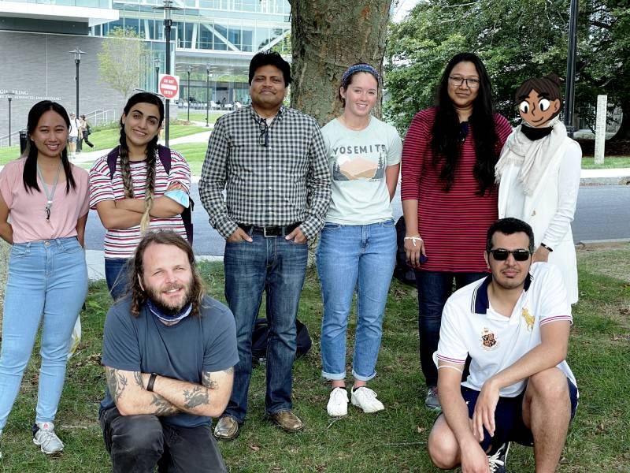

AKANDA LAB
@ the University of Rhode Island
Department of Civil & Environmental Engineering
- Home - Faculty -
- Group -
- Publications

Current Students
Farah Nusrat, PhD
Hanan Bankhah, PhD
Albe Larson, PhD
Mohammed Alotaibi, PhD
Wulan Retno Septiani, PhD
Cameron Murray, MS
Darya Shahidi, MS
Alumni
Lukas Siemon, MS 2020, currently at Technische Universität Braunschweig, thesis
Farah Nusrat, MS 2018, currently a PhD student at the University of Rhode Island, thesis
Othman Fallatah, PhD 2018, currently at King Abduaziz University, thesis
Mohammed Alfi Hasan 2018, PhD, currently at Monsanto, thesis
Fabian Wagner, MS 2017, currently at Hochschule Furtwangen University, thesis
Emily Serman, MS 2017, currently at USC, thesis
Group Photo, September 2021
Front Row (from left): Albe, Mohammed
Back Row (from left): Wulan, Darya, Ali, Cameron, Farah, Hanan

In Progress
Nusrat, F., Akanda, A.S. , Haque, M, Rollen, D. 2021. Application of high-resolution Earth Observations Imagery & Machine Learning to forecast cholera in a post-disaster scenario. Climate – Climate and Weather Extremes, Special Issue. Under Review.
Akanda, A.S., Khan, A.K., Hasan, M.A., Qadri, F., et al. 2021. A high-resolution geospatial analysis for identifying the endemic cholera burden in Bangladesh. PLoS Neglected Tropical Diseases, Under Revision.
Hasan, M.A., Islam, A.K.M.S., Qadri, F., Akanda, A.S., et al. 2021. The future risk of acute diarrheal diseases over Bengal delta based on climatic extremes-driven epidemic models: a case study with bias-corrected regional model results. International Journal of Biometeorology, Under Review.
Published2020 - 2021
Aziz, S., Pakhtigian, E.L., Akanda, A.S., Jutla, A., Huq, A., Alam, M., Ashan, G.U. and Colwell, R.R., 2021. Does improved risk information increase the value of cholera prevention? An analysis of stated vaccine demand in slum areas of urban Bangladesh. Social Science & Medicine, 272, p.113716. https://doi.org/10.1016/j.socscimed.2021.113716
Akanda A.S., Johnson K., Ginsberg H., 2020. Prioritizing Water Security in the Management of Vector Borne Diseases: Lessons from Oaxaca Mexico. Geohealth, https://doi.org/10.1029/2019GH000201
Daisy, S.S., Islam, AKMS, Akanda, A.S., Faruque A.S.G, Amin, N., Jensen, P.K.M., 2020. Developing a forecasting model for cholera incidence in Dhaka megacity through time series climate data. J Water Health jwh2020133. https://doi.org/10.2166/wh.2020.133
Puggioni, G., Couret, J., Serman, E., Akanda, A.S., Ginsberg, H., 2020. Spatiotemporal Modeling of Dengue Fever Risk in Puerto Rico. Spatial and Spatiotemporal Epidemiology. Volume 35, November 2020, 100375. https://doi.org/10.1016/j.sste.2020.100375
Palash, W., Akanda, A.S., and Islam, S. 2020. The 2017 Floods in South Asia: State of Prediction and Performance of a Requisitely Simple Model. Journal of Hydrology, 589, 125190. https://doi.org/10.1016/j.jhydrol.2020.125190
Deshpande et al. 2020b (Local Burden of Disease 2019 Neglected Tropical Diseases Collaborators). The global distribution of lymphatic filariasis, 2000–18: a geospatial analysis. Lancet Global Health. Volume 8, Issue 9, September 2020, Pages e1186-e1194. https://doi.org/10.1016/S2214-109X(20)30286-2
Deshpande et al. 2020a (Local Burden of Disease WaSH Collaborators). Mapping geographical inequalities in access to drinking water and sanitation facilities in low-income and middle-income countries, 2000–17. Lancet Global Health. Volume 8, Issue 9, Pages e1162-e1185. https://doi.org/10.1016/S2214-109X(20)30278-3
Reiner et al. 2020 (Local Burden of Disease Diarrhoea Collaborators). Mapping geographical inequalities in childhood diarrhoeal morbidity and mortality in low-income and middle-income countries, 2000–17. Lancet. Volume 395, Issue 10239, Pages 1779- 1801. https://doi.org/10.1016/S0140-6736(20)30114-8
2019
Fallatah, O.A., Ahmed, M., Boving, T., Cardace, D., and Akanda, A.S., 2019. Assessment of Modern Recharge to Arid Region Aquifers Using an Integrated Geophysical, Geochemical, and Remote Sensing Approach. Journal of Hydrology, 569, 600-611. DOI: 10.1016/j.jhydrol.2018.09.061
Khan, R., Aldaach, H., McDonald, C., Alan, M., Huq, A., Gao, Y., Akanda, A.S., Colwell, R, and Jutla A., 2018. Exploratory analysis associating satellite derived land surface temperature to estimate cholera risk. Intl Journal of Remote Sensing, VOL. 40, NO. 13, 4898–4909.
Khan, R., Usmani, M., Akanda, A.S., Palash, W., Gao, Y., Huq, A., Colwell, R, and Jutla A., 2018. Long range river discharge forecasting using the Gravity Recovery and Climate Experiment (GRACE). ASCE - Journal of Water Resources Planning and Management, 145(7): 06019005.
2018
GBD 2017 SDG Collaborators, 2018. Measuring progress and projecting attainment to 2030 of the health-related Sustainable Development Goals for 195 countries and territories, 1990-2017: a systematic analysis for the Global Burden of Disease Study 2017. Lancet, 392: 2091–138.
GBD 2017 Mortality Collaborators, 2018. Global, regional, and national age-sex-specific mortality and life expectancy, 1950–2017: a systematic analysis for the Global Burden of Disease Study 2017. Lancet, 392: 1684–735.
GBD 2017 Population and Fertility Collaborators, 2018. Population and fertility by age and sex for 195 countries and territories, 1950–2017: a systematic analysis for the Global Burden of Disease Study 2017. Lancet, 392: 1995–2051.
Akanda, A.S. and Johnson, K. 2018. Growing Water Insecurity and Dengue Burden in the Americas. The Lancet Planetary Health, 2, pp. e190-e191, doi:10.1016/S2542- 5196(18)30063-9.
Akanda, A.S., S. Aziz, A. Jutla, A. Huq, M. Alam, G. U. Ahsan, and R. Colwell 2018. Satellites and cell phones form a cholera early-warning system, EOS, 99, doi:10.1029/2018EO094839.
Hasan, M.A., Moew, C., Jutla, A., and Akanda, A.S. 2018. Quantification of Rotavirus Diarrheal Risk Due to Hydroclimatic Extremes Over South Asia: Prospects of Satellite-Based Observations in Detecting Outbreaks. Geohealth, doi:10.1002/2017GH000101. [new AGU journal – no IF published yet]
Palash, W., Jiang, Y., Akanda, A.S., Small, D., Nozari, A. and Islam, S. 2018. A Streamflow and Water Level Forecasting Model for the Ganges, Brahmaputra and Meghna Rivers with Requisite Simplicity. Journal of Hydrometeorology, Vol, 19, 201-225, DOI: 10.1175/JHM-D- 16-0202.1.
2017
Hasan, M.A., Islam, A.K.M.S. and Akanda, A.S. 2017. Climatic extremes from dynamically downscaled CMIP5 models over Bengal Delta under RCP scenarios: An advanced bias- correction approach with new gridded data. Climate Dynamics, doi:10.1007/s00382-017- 4006-1
Khan, R., Anwar, R., Akanda, A.S., McDonald, M.D., Huq, A., Jutla, A., and Colwell, R.R. 2017. Assessment of Risk of Cholera in Haiti following Hurricane Matthew. Am J Trop Med Hyg. 97(3). doi:10.4269/ajtmh.17-0048
Fallatah, O.A., Ahmed, M., Save, H. and Akanda, A.S., 2017. Quantifying Temporal Variations in a Vulnerable Middle Eastern Transboundary Aquifer System. Hydrological Processes. 1-11. DOI: 10.1002/hyp.11285.
GBD 2016 Mortality Collaborators, 2017. Global, regional, and national under-5 mortality, adult mortality, age-specific mortality, and life expectancy, 1970–2016: a systematic analysis for GBD Study 2016. The Lancet, 390: 1084–1150.
Charara, R. et al. 2017. The Burden of Mental Disorders in the Eastern Mediterranean Region, 1990-2013. PLoS ONE. DOI: 10.1371/journal.pone.0169575.
2016
Nasr, F.A., Khan, R., Unnikrishnan, A., Akanda, A.S., Alam, M., Huq, A., Jutla, A., and Colwell, R.R. 2016. Hydroclimatic sustainability assessment of changing climate on cholera in the Ganges-Brahmaputra basin. Adv Water Res. 108, 332-344. [IF: 2.8]
GBD 2015 Mortality and Causes of Death Collaborators, 2016. Global, regional, and national life expectancy, all-cause mortality, and cause-specific mortality for 249 causes of death, 1980–2015: a systematic analysis for the Global Burden of Disease Study 2015. The Lancet, 388(10053): 1459–544. [IF: 53]
Khalil, I., et al. 2016. Burden of Diarrhea in the Eastern Mediterranean Region, 1990–2013: Findings from the Global Burden of Disease Study 2013. Am J Trop Med Hyg. 16-0339. doi:10.4269/ajtmh.16-0339. [IF: 2.55]
Hossain, F., Serrat-Capdevila A., Granger S., Crosson, W., Akanda A.S., et al. 2016. A Global Capacity Building Vision for Societal Applications of Earth Observing Systems and Data. Bull Am Met Soc. doi:10.1175/BAMS-D-15-00198.1
2015 SDG Collaborators, 2016. Measuring the health-related Sustainable Development Goals in 188 countries: a baseline analysis from the Global Burden of Disease Study 2015. The Lancet, 388(10053): 1813–1850.
Mokdad, A.H., et al. 2016. Health in times of uncertainty in the eastern Mediterranean region, 1990–2013: a systematic analysis for the Global Burden of Disease Study 2013. Lancet Global Health, 4(10). doi:10.1016/S2214-109X(16)30168-1.
2015
Jutla, A.S., Unnikrishnan, A., Akanda, A.S., Huq, H., and Colwell, R.R. 2015. Predictive time series analysis linking Bengal cholera with terrestrial water storage measured from GRACE sensors. Am J Trop Med Hyg. 14-0648.
Jutla, A.S., Aldaach, H., Billian, H., Akanda, A.S., Huq, A., and Colwell, R.R. 2015. Satellite based assessment of hydroclimatic conditions related to cholera in Zimbabwe. PLOS-One, doi: 10.1371/journal.pone.0137828
Nasr, F.A., Unnikrishnan, A., Akanda, A.S., Alam, M., Huq, A., Jutla, A.S., Colwell, R.R. 2015. A framework for downscaling river discharge to access impacts of climate change on endemic cholera in the Bengal Delta. Climate Research, doi: 10.3354/cr01310; 64: 257-274.
2014 and earlier
Akanda, A.S., Jutla, A.S., and Colwell, R.R. 2014. Global Diarrhoeal Action Plan needs Integrated Climate-based Surveillance. Lancet Global Health, 2(2): 69- 70.
Akanda A.S., Jutla A.S., Gute D.M., Sack B.R., Alam M., Huq A., Colwell R.R., Islam S. 2013. Population Vulnerability to Biannual Cholera Peaks and Associated Macro-Scale Drivers in the Bengal Delta. Am J Trop Med Hyg, 89(5), pp. 950–959.
Jutla, A.S., Whitcombe, E., Hasan, N., Haley, B., Akanda, A.S, Huq, A., Alam, M., Sack, D. and Colwell, R.R., 2013. Environmental Factors Influencing Epidemic Cholera. Am J Trop Med Hyg 89(3).
Jutla A.S., Akanda A.S., Islam S. 2013. A framework for predicting endemic cholera using satellite derived environmental determinants. Env Modeling & Software, 47: 148-158.
Jutla A.S., Akanda A.S., Huq A., Colwell R.R., Islam S. 2013. A water marker monitored by satellites for predicting endemic cholera. RS Letters, 4(8): 822-831
Akanda, A.S. 2012. South Asia’s Water Conundrum: Hydroclimatic and Geopolitical Asymmetry, and Brewing Conflicts in the Eastern Himalayas. Intl J River Basin Management, 10(4): 307-315.
Akanda, A.S. and Hossain, F. 2012. The Climate-Water-Health Nexus in Emerging Megacities. EOS Transactions, 93(37): 353-354.
Jutla, A.S., Akanda, A.S. and Islam, S. 2012. Satellite Remote Sensing of Space-Time Plankton Variability in the Bay of Bengal: Connections to Cholera Outbreaks. Remote Sensing of Environment, 123: 196-206.
Akanda, A.S., Jutla, A.S., Gute, D.M., Evans, T. and Islam, S. 2012. Reinforcing Cholera Intervention through Prediction aided Prevention. Bull World Health Organ, 90: 243-244.
Alam, M., Islam, A., Akanda, A.S., et al. 2011. Clonal transmission, dual peak, and off-season cholera in Bangladesh. Infection Ecology and Epidemiology, 1: 7273.
Akanda, A.S., Jutla, A.S., Constantin de Magny, G.C., Alam, M., Siddique, A.K., Sack, R.B., Huq, A., Colwell, R.R. and Islam, S. 2011. Hydroclimatic Influences on Seasonal and Spatial Cholera Transmission Cycles: Implications for Public Health Intervention in the Bengal Delta. Water Resources Research, 47, W00H07.
Jutla, A.S., Akanda, A.S., Griffiths, J., Colwell, R.R. and Islam, S. 2011. Warming oceans, phytoplankton, and river discharge: Implications for cholera outbreaks. American Journal of Tropical Medicine and Hygiene, Vol. 85, No. 2.
Jutla, A.S., Akanda, A.S. and Islam, S. 2010. Tracking Cholera in Coastal Regions using Satellite Observations. Journal of American Water Resources Association, 46(4): 651-662.
Akanda, A.S., Jutla, A.S. and Islam, S. 2009. Dual peak cholera transmission in Bengal Delta: A hydroclimatological explanation. Geophy Res Lett, 36, L19401.
Peer-Reviewed Book Chapters
Jiang, Y., Akanda, A.S., Small, D.L., Palash, W., Islam, S. 2016. A Simple Streamflow Forecasting Scheme for the Ganges Basin. Flood Forecasting. Elsevier Inc. doi:10.1016/B978-0-12-801884- 2.00015-3
Crosson, W., Akanda, A.S., Estes, S., Haynes, J., et al. 2016. Use of Remotely Sensed Climate and Environmental Information for Air Quality and Public Health Applications. Earth Science Satellite Applications: Current Future Prospects. Springer Remote Sensing/Photogrammetry.
Akanda, A.S., A.S. Jutla, and S. Islam, 2013. Hydroclimatology and Large-Scale Population Vulnerability to Cholera Outbreaks in the Bengal Delta. Climate Vulnerability: Understanding and Addressing Threats to Essential Resources. Elsevier Inc., Academic Press, 347–356 pp.
Islam, S., Gao, Y. and Akanda, A.S. 2010. Water 2100: A synthesis of natural and societal domains to create actionable knowledge through AquaPedia and water diplomacy. Pp 193-197; in Khan, S. et al., Hydrocomplexity: New Tools for solving wicked water problems, IAHS 338.